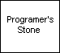
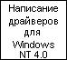

Разное
ВТОРОЕ ИЗДАНИЕ
Rational Санта-Клара, Калифорния
перевод с английского под редакцией И. Романовского и Ф. Андреева
Формат файла: Файл HTML
Язык: Русский
Язык: Русский

213k

Формат файла: Файл HTML
Язык: Русский
5.2M

Формат файла: Word Doc
Язык: Русский
117k